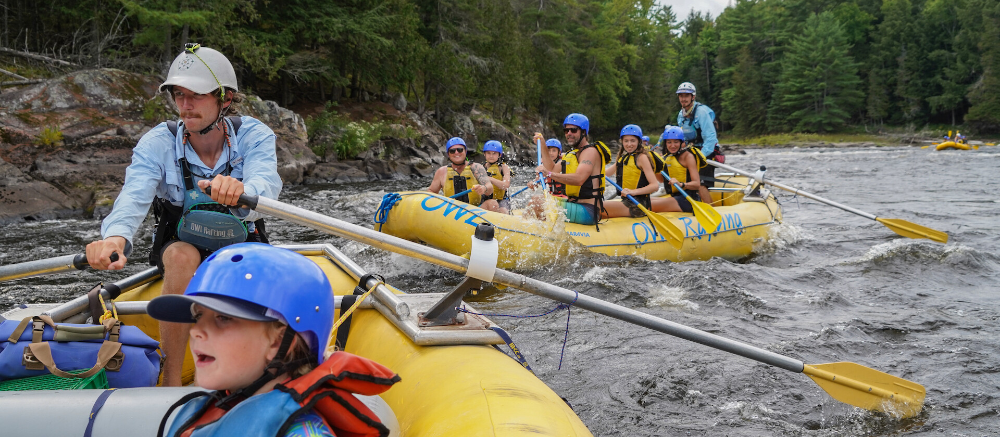
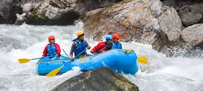

History
Grand Water Rapids started in 2006, born from the shared passion of river enthusiasts craving adventure. Since then, we've been dedicated to providing thrilling rafting experiences while preserving the natural beauty that surrounds us.
Our website caters to adventurous individuals aged 18 to 45, seeking thrilling outdoor experiences. They expect comprehensive information on water rafting tours and safety measures, primarily accessing the website through mobile devices for convenient browsing and booking.
Adventure Awaits You!

Fun with Family and Friends!

Minimum age: 10 years old

Exceptional Tour Guides

Exemplary Customer Service

Free Professional Photos